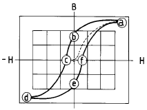
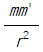
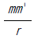
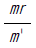
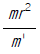
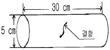
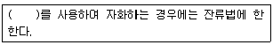
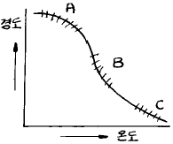
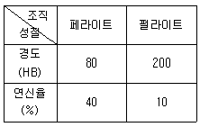

자기비파괴검사기사(구) (2004-03-07 기출문제)
1과목: 자기탐상시험원리
1. 다음 중 자분탐상검사에 관한 올바른 설명은?
- 침투탐상검사보다 더 정밀한 전처리가 요구된다.
- 검사 후 반드시 탈자와 후처리가 요구된다.
- 상자성체의 시험체를 검사시 반드시 직류로만 사용하여야 한다.
- 예측되는 결함의 방향에 대하여 자계의 방향이 직각이 되어야 한다.
(정답률: 알수없음)

2. 프로드(prod)를 사용하여 통전하는 경우 접촉부위에 소손을 방지하기 위하여 실시하는 조치 중 맞는 것은?
- 전극에 얇은 납판을 부착한다.
- 전극에 얇은 금속복합 판재를 부착한다.
- 전극에 얇은 함석판를 부착한다.
- 전극에 얇은 플라스틱판을 부착한다.
(정답률: 알수없음)
3. 자기이력곡선에서 a점이 의미하는 뜻은?

- 자기포화
- 항자력
- 잔류자기
- 보자력
(정답률: 알수없음)
4. 나사부, 구멍 내부 등의 결함을 검출하기에 가장 적당한 자분탐상검사법은?
- 형광-습식
- 형광-건식
- 비형광-습식
- 비형광-건식
(정답률: 알수없음)
5. 일정 전류가 흐르는 도체에 전류의 양은 변화시키지 않고 직경을 배로 하였을 때 도체 표면 자계의 세기 변화는?
- 동일하다.
- 1/2로 줄어 든다.
- 1/4로 줄어 든다.
- 2배로 늘어 난다.
(정답률: 알수없음)
6. 자분검사액의 고체 성분의 농도를 측정하는 방법으로 올바른 것은?
- 부유액의 무게를 측정한다.
- 벤졸에 고체성분을 담근다.
- 부유액이 침전하도록 놓아 둔다.
- 자석에서의 인력을 측정한다.
(정답률: 알수없음)
7. 자기모멘트 Mm[Wb.m]의 자석이 평등자계 H내에 자계의 방향과 θ의 각도로 놓여 있을 때 이것에 작용하는 토크 T [Nm]는?
- Mm.H cosθ
- Mm.H tanθ
- Mm.H sinθ
- 2Mm.H cosθ
(정답률: 알수없음)
8. 코일을 사용한 자분탐상검사시 시험체직경이 3인치, 길이가 18인치인 환봉(Fe)을 검사할 때 요구되는 자화전류는? (단, 코일 감은 수는 3회로 함)
- 1,500A
- 1,800A
- 2,000A
- 2,500A
(정답률: 알수없음)
9. 다음 중 코일법으로 자화하는 경우 자계(장)강도에 영향을 주지 않는 인자는?
- 코일을 감은 수
- 코일에 흐르는 전류값
- 코일의 지름
- 코일의 길이
(정답률: 알수없음)
10. 자화전류 중 표피효과로 인하여 자속이 표면에만 집중되어 표면검사에 국한하는 전류는?
- 직류
- 교류
- 맥류
- 충격전류
(정답률: 알수없음)
11. 고장력 강용접부에 대한 지연균열을 검출하기 위해서 자분탐상시험을 실시하는 경우 용접완료 후 몇 시간이 경과한 후에 시험하는 것이 바람직한가?
- 6시간
- 12시간
- 18시간
- 24시간
(정답률: 알수없음)
12. 다음 중 자분탐상검사후 탈자의 효과가 가장 우수한 경우는?
- 극성을 바꾸면서 전압이 단계적으로 감압될 수 있는 직류(DC)장치
- 극성을 바꾸면서 단계적으로 감압될 수 있는 교류(AC)장치
- 반파정류된 교류(AC)
- 전파정류파
(정답률: 알수없음)
13. 막대자석의 자극에 두 자기량 m, m'가 진공 중 r의 거리에 있다고할 때 척력(F)은 어떻게 표시되는가?




(정답률: 알수없음)
14. 길이는 동일하나 직경이 1인치 및 2인치인 2개의 봉에 같은 크기의 자화전류를 통전시켰을 경우, 봉의 표면에서 나타나는 자계의 세기에 대해 올바르게 설명한 것은?
- 봉의 표면에서 나타나는 자계의 세기는 동일하게 나타난다.
- 1인치 봉의 표면에서의 자계의 세기는 2인치 봉의 자계 세기의 약 2배가 된다.
- 2인치 봉의 표면에서의 자계의 세기는 1인치 봉의 자계 세기의 약 2배가 된다.
- 1인치 봉의 표면에서의 자계의 세기는 2인치 봉의 자계 세기의 약 1/4이 된다.
(정답률: 알수없음)
15. 공기 중에 8x10-4[Wb]와 4x10-6[Wb]의 두 자극 사이에 작용하는 힘이 12.66[N]일 때 두 자극사이의 거리[㎝]는?
- 4[㎝]
- 6[㎝]
- 8[㎝]
- 10[㎝]
(정답률: 알수없음)
16. 습식자분에서 자분함량이 많을 경우에 나타나는 현상은?
- 건전부위에 자분모양이 나타나서 결함부와의 구분이 어렵게 된다.
- 결함부에 너무 많은 자분이 흡착되어 원형지시가 선형 지시로 오판될 수 있다.
- 누설자속의 양이 자분의 농도로 인하여 약화된다.
- 나사부위 등 움푹한 부분에 자분이 고이게 되어 후처리를 어렵게 한다.
(정답률: 알수없음)
17. 자분탐상시험시 잔류법으로 시험할 때 고려하여야 할 사항으로 맞는 것은?
- 충격전류는 잔류법에 적용할 수 있다.
- 반파정류를 사용하는 극간법이 효과적이다.
- 반파정류를 사용하는 프로드(Prod)법이 효과적이다.
- 교류를 사용하는 자분탐상기는 보자성이 높은 자성체에는 이용할 수 없다.
(정답률: 알수없음)
18. 자분탐상검사에 앞서 조립품을 해체하여 검사해야 하는 주된 이유로 틀린 것은?
- 해체하므로써 전표면을 탐상할 수 있어서
- 해체하면 취급이 용이하므로
- 조립된 부위에서 누설자속이 나타날 가능성이 많으므로
- 자화력이 기하급수적으로 증가하므로
(정답률: 알수없음)
19. 석유저장탱크의 강용접부를 자분탐상검사할 때 용접선 양끝으로부터 다음 중 어느 범위이상을 시험범위로 하여야 하는가?
- 모재두께의 1배이상 더한 길이
- 모재두께의 1/2배이상 더한 길이
- 모재두께의 3/4배이상 더한 길이
- 모재두께의 2배이상 더한 길이
(정답률: 알수없음)
20. 다음 자화방법중 가장 깊은 결함을 찾을 수 있는 것은?
- 교류, 건식법
- 교류, 습식법
- 직류, 습식법
- 직류, 건식법
(정답률: 알수없음)
2과목: 자기탐상검사
21. 방향이 다른 두 자장이 시험품에 유도되었을 때, 두 자장의 강도와 방향은 어떻게 변하는가?
- 더 강해진다.
- Vector의 합으로 표시된다.
- 비대칭 원형자장이 된다.
- 대칭 원형자장이 된다
(정답률: 알수없음)
22. 다음 중 표면 아래 결함(subsurface defect)을 검출하는 데 가장 적합한 자화전류는?
- 단상반파정류
- 단상전파정류
- 삼상반파정류
- 삼상전파정류
(정답률: 알수없음)
23. 자분의 적용시 건식법과 비교하였을 때 습식법의 장점에 속하지 않는 것은?
- 크고 적은 불규칙한 모양의 시험품에 자분적용 용이
- 소형의 다량제품에 빠르고 좋은 방법
- 후처리시 표면에 남은 자분제거가 용이
- 자동장치의 작업에 적합
(정답률: 알수없음)
24. 자기고무법(Magnetic Rubber Test)의 장점이 아닌 것은?
- 가동중인 검사품의 피로시험에서 균열의 성장과장의 관찰이 가능하다.
- 도금된 검사품도 검사가 가능하다.
- 육안관찰이 어려운 부분의 검사가 가능하다.
- 검사에 소요되는 시간이 다른 검사방법에 비해 짧다.
(정답률: 알수없음)
25. 습식 자분탐상시험시 탱크의 액 용량은?
- 탱크 용량의 1/3
- 탱크 용량의 1/2
- 탱크 용량의 2/3
- 탱크 용량과 동일
(정답률: 알수없음)
26. 자분에 대한 다음 설명 중 옳지 않은 것은?
- 사용중인 자분을 점검하는 경우 사용 중의 자분을 소량 채취하여 상태를 점검해야 한다.
- 자분 성능점검을 위한 표준품은 공인기관에서 제공하는 것만을 사용해야 한다.
- 자분의 성능점검은 표준품과 비교하는 것이 가장 정확하다.
- 보관중인 자분을 점검하는 경우 보관 중의 자분을 소량 채취하여 상태를 점검해야 한다.
(정답률: 알수없음)
27. 자분탐상검사의 목적을 만족시키는 탐상단계를 바르게 나열한 것은?
- 자분지시의 생성, 판독, 전처리
- 자분지시의 생성, 판독, 탈자
- 자분지시의 생성, 전처리, 자화, 판독
- 자분지시의 생성, 자화, 탈자, 판독
(정답률: 알수없음)
28. 대형 구조물의 용접부위를 극간법으로 자분탐상할 때 직류보다 교류를 사용하는 주된 이유는?
- 교류는 탈자하지 않아도 된다.
- 직류는 두께의 영향을 받으나 교류는 두께의 영향을 받지 않는다.
- 철심단면적이 같을 때에는 교류가 철심중심에 자속수가 많다.
- 접촉상태가 나쁠 때는 교류쪽이 영향이 적다.
(정답률: 알수없음)
29. 프로드법에서 전극에 구리망사를 입히는 주 이유는?
- 전류가 잘 통하도록 도와준다.
- 접촉면을 넓게 하고 스파크에 의한 제품의 손상을 줄이기 때문이다.
- 전극부위의 자속밀도를 높이기 때문이다.
- 검사품에 골고루 자장을 유도하기 위함이다.
(정답률: 알수없음)
30. 자분탐상검사 장비를 구성하기 위해서는 검사목적에 따라 여러 가지 사항을 고려하여 결정하여야 한다. 다음 중 고려사항으로 옳지 않은 것은?
- 지시 및 시험면을 완전히 건조시킨후 수행해야 한다.
- 분산매로 물을 사용한 경우에는 아세톤 등을 첨가하면 보다 빠른 건조가 이루어진다.
- 분산매로 기름을 사용한 경우는 건조가 빠르기 때문에 보다 쉽게 수행할 수 있다.
- 형광습식법에서는 검은 종이를 사용하면 보다 효과적일 수 있다.
(정답률: 알수없음)
31. 다음 중 주괴(ingot)로부터 철자성 물질을 생산할 때에 발생하는 고유결함(inherent discontinuities)이 아닌 것은?
- cold shut
- hot tears
- laps
- pipe
(정답률: 알수없음)
32. 자분탐상검사는 침투탐상검사와 달리 표면 바로 밑에 존재하는 결함도 검출할 수 있는데, 결함의 위치 및 크기 등이 동일하다고 가정할 때 가장 검출이 어려운 결함의 종류는?
- 기공
- 슬래그 혼입
- 터짐
- 융합부족
(정답률: 알수없음)
33. 시험체에 유도전류를 발생시키므로서 시험체에 자장을 형성하는 자화장치는?
- 자속관통식
- 코일식
- 전류관통식
- 축통전식
(정답률: 알수없음)
34. 다음 중 자외선조사등(Black light)에 사용하는 필터의 목적으로 적합하지 않은 것은?
- 가시광선을 차단한다.
- 인체에 유해한 파장의 자외선을 차단한다.
- 필요한 자외선의 파장을 균일하게 한다.
- 발생되는 자외선의 평균 파장을 짧게 한다.
(정답률: 알수없음)
35. 건식법에 비해 습식 형광자분탐상의 장점에 해당하는 경우는?
- 시험품의 크기가 클 때
- 용접부를 검사할 때
- 탐상속도를 빨리하고 정밀도가 요구될 때
- 시험을 야외에서 수행할 때
(정답률: 알수없음)
36. 다음의 자화방법 중에서 자화의 형태가 선형자화인 것은?
- 축통전법
- 프로드법
- 코일법
- 전류관통법
(정답률: 알수없음)
37. 프로드(prod)법에 대한 설명으로 맞지 않는 것은?
- 부품, 구조물의 부분탐상을 위하여 원형자장을 형성할 때 사용한다.
- 시험품에 직접 자화전류를 보낸다.
- 전극 동봉의 굵기는 자화전류의 크기에 따라 정할 필요가 있다.
- 프로드법은 전기적 스파크를 방지하기 위한 특별한 조치는 필요없다.
(정답률: 알수없음)
38. 경제적인 면을 고려치 않을 때 다음 중 대형주조물의 결함을 검출할 수 있는 가장 효율적인 방법은?
- 1회에 6내지 8인치 간격으로 프로드를 대고 전류를 통한다.
- 주조물의 끝에서 끝으로 전류를 보낸다.
- 강한 자장이 검사를 방해하지 않을 만큼 투자율이 낮아야 한다.
- 자장이 불연속에 대해 평행하도록 전류를 통한다.
(정답률: 알수없음)
39. 코일을 이용해 자분탐상시험을 하는 경우 일반적으로 사용되는 공식을 적용하기 위한 전제조건을 설명한 것중 옳지 않은 것은?
- 코일로 한번 자화시키는 시험체의 길이가 18인치를 초과해서는 안된다.
- 시험체의 직경/길이 비는 2∼15 이어야 한다.
- 시편의 단면적은 코일내부 단면적의 1/10보다 커서는 안된다.
- 시험체의 직경과 길이에 관련된 치수비를 제한하는 것은 반자계의 영향 때문이다.
(정답률: 알수없음)
40. 결함의 방향이 그림과 같이 형성될 때 자분탐상시험 중 어느 방법으로 하는 것이 가장 효과적이며 잘 검출될 수 있는가?

- 코일법
- 축 통전법
- 전류 관통법
- 자속 관통법
(정답률: 알수없음)
3과목: 자기탐상관련규격및컴퓨터활용
41. ASME 규격에 의해 프로드법으로 검사할 경우 프로드 간격 6인치에 650[A]를 사용하였다. 만약 같은 장비로 프로드간격을 12인치로 늘리고 전류를 1300[A]로 하였을 때 그 결과는 어떻게 되겠는가?
- 두가지 방법에서 동일한 결과를 얻는다.
- 6인치 650[A]의 경우가 자분지시가 더 선명하다.
- 12인치 1300[A]의 경우가 자분지시가 더 선명하다.
- 두가지 방법 모두 자분지시가 나타나지 않는다.
(정답률: 알수없음)
42. KS D 0213에서 시험 기록시 작성하지 않아도 되는 것은?
- 자분의 모양
- 시험 장치
- 자분의 적용시기
- 시험실 온도
(정답률: 알수없음)
43. ASME 규격에 규정한 자분탐상시험의 자분에 대한 설명으로 틀린 것은?
- 투자율이 커야 한다.
- 잔류자기가 없어야 한다.
- 보자력이 커야 한다.
- 적당한 크기와 형태를 지녀야 한다.
(정답률: 알수없음)
44. KS D 0213의 자화전류를 선택하는 것에 대한 설명으로 ( )안에 맞는 것은?

- 직류
- 교류
- 맥류
- 충격전류
(정답률: 알수없음)
45. 정보통신 시스템을 이루는 요소가 아닌 것은?
- 정보원(source)
- 전송 매체(medium)
- 정보 선택(select)
- 정보 목적지(destination)
(정답률: 알수없음)
46. ASME Sec.Ⅴ Art.7에 의한 자분탐상시험시 시험체 표면에서의 자외선조사장치의 최소 강도로 다음 중 맞는 것은?
- 500㎼/㎝2
- 1000㎼/㎝2
- 1500㎼/㎝2
- 2000㎼/㎝2
(정답률: 알수없음)
47. ASTM E 709규격에 따라 외경 5인치 크기의 원형부품을 직경 1인치의 중심도체를 사용하여 자분탐상시험을 하고자 한다. 중심도체의 직경에 따른 검사유효범위 때문에 원형 부품을 몇 번 나누어 자화시켜야 하는가? (단, 원형부품의 중심부는 뚫려 있다.)
- 1번 자화
- 2번 자화
- 3번 자화
- 4번 자화
(정답률: 알수없음)
48. 인터넷에서 유즈넷에 게시된 자료를 검색하는 서비스를 무엇이라 하는가?
- 파일 검색
- 고퍼 검색
- 뉴스 검색
- 웹문서 검색
(정답률: 알수없음)
49. 컴퓨터의 정보에 관한 특성 중 옳지 않은 것은?
- 정보는 시한성을 갖는다.
- 정보는 사용할수록 고갈되어 없어진다.
- 미공개된 정보가 더 가치가 있는 경우가 많다.
- 같은 정보라도 시기, 장소에 따라 중요도가 달라질 수 있다.
(정답률: 알수없음)
50. ASME Sec.Ⅴ에서 건식자분을 사용할 수 있는 시험 표면의 최대 온도는?
- 200℉(93℃)
- 400℉(204℃)
- 600℉(316℃)
- 800℉(427℃)
(정답률: 알수없음)
51. ASME Sec.V에서 극간법(Yoke)에 사용되는 요크의 인상력(Lifting power)을 옳게 설명한 것은?
- 직류식 요크의 경우 10파운드(4.5kg) 이상
- 영구자석식 요크의 경우 10파운드(4.5kg) 이상
- 교류식 요크의 경우 10파운드(4.5kg) 이상
- 교류, 직류식 모두 10파운드(4.5kg) 이상
(정답률: 알수없음)
52. KS D 0213에서는 "( )를 사용하여 자화하는 경우 원칙적으로 표면 흠의 검출에 한한다."로 규정하고 있다. 괄호 안에 맞는 것은?
- 충격전류 및 직류
- 맥류 및 교류
- 교류 및 충격전류
- 직류 및 맥류
(정답률: 알수없음)
53. KS D 0213에서 A형 표준시험편의 사용 설명과 거리가 먼것은?
- 인공흠이 있는 면이 시험면에 잘 밀착되도록 붙인다.
- 시험편의 명칭은 시험체의 자기특성, 검출해야 할 흠의 종류, 크기에 따라 정한다.
- 자분의 적용은 연속법으로 한다.
- 명칭의 분수치가 작은 것만큼 순차적으로 낮은 유효자계의 강도로 자분모양이 나타난다.
(정답률: 알수없음)
54. KS 규격에서 자분탐상시험의 분류 방법에 해당되지 않는 것은?
- 자분의 종류
- 검사체의 두께
- 자분의 분산매
- 자화전류의 종류
(정답률: 알수없음)
55. 다음 중 인터넷 문서를 만들 수 있는 응용 프로그램이 아닌 것은?
- 메모장
- MS-word
- 한글 97
- Photo-shop
(정답률: 알수없음)
56. KS D 0213에 의해 용접부의 열처리 후, 압력용기의 내압시험 종료 후에 행하는 자분탐상시험의 자화방법은 원칙적으로 어떤 방법을 사용하는가?
- 통전법을 사용한다.
- 관통법을 사용한다.
- 극간법을 사용한다.
- 프로드법을 사용한다.
(정답률: 알수없음)
57. KS D 0213에서 잔류법을 사용할 때 원칙적으로 통전시간의 설정은 몇 초로 하는가?
- 1/4∼1초
- 1/2∼1초
- 1초∼2초
- 2초∼3초
(정답률: 알수없음)
58. ASME Sec.V에서 규정한 자분탐상시험시 ammeter의 교정주기는?
- 6개월
- 1년
- 2년
- 규정이 없음
(정답률: 알수없음)
59. 네트워크에서 여러 대의 컴퓨터를 하나의 케이블로 집중 시키거나 하나의 랜 케이블에 여러 대의 컴퓨터를 연결해 쓸 수 있도록 확장시키는 역할을 하는 것은?
- Gateway
- Router
- Hub
- Hypercube
(정답률: 알수없음)
60. 자분탐상시험은 원칙적으로 시험품에 대하여 4단계 조작을 해야 한다. 다음 중 필요하지 않으면 생략할 수 있는 과정은?
- 자화
- 탈자
- 관찰
- 자분의 적용
(정답률: 알수없음)
4과목: 금속재료학
61. 고망간(12∼14%Mn) 강(steel)을 1000℃로 가열하여 공냉 시켰을 때 상온에서의 조직은?
- Troostite
- Austenite
- Pearlite
- Ferrite
(정답률: 알수없음)
62. 과공정 Aℓ - Si합금의 개량처리(modification)에 가장 효과적인 것은?
- Mg 또는 MgCℓ 2
- Na 또는 NaCℓ
- P 또는 PCℓ 5
- Ca 또는 CaCℓ 2
(정답률: 알수없음)
63. 내마모성의 용도로 사용 되는 Nihard 또는 고(高)Cr-(Mo) 주철이란 어느 기지 조직의 주철인가?
- Austenite
- Pearlite
- Ferrite
- Martensite
(정답률: 알수없음)
64. 다결정 Cu 를 냉간 가공시킨 후 여러 온도에서 풀림을 시킨 결과 그림과 같이 경도-온도 곡선이 구하여 졌을 때 A,B,C 구역에서 일어난 현상을 옳게 나타낸 것은?

- A 구역은 회복,B 구역은 재결정,C 구역은 결정입성장
- A 구역은 재결정,B 구역은 결정입성장,C 구역은 회복
- A 구역은 결정입성장,B 구역은 재결정,C 구역은 회복
- A,B,C 구역 다같이 회복
(정답률: 알수없음)
65. Mg - Aℓ 계 합금에 소량의 Zn과 Mn을 첨가한 마그네슘 합금은?
- 에렉트론(elektron)합금
- 헤스테로이(hastelloy)
- 모넬(monel)
- 자마크(zamak)
(정답률: 알수없음)
66. 항온변태의 Ms와 CCT를 바르게 설명한 것은?
- 마텐자이트가 발생하는 시기와 연속냉각변태
- 마텐자이트가 완료하는 시기와 변태시간곡선
- 노우스 변태점과 과냉시간곡선
- 노우스 점과 과포화 탄소곡선
(정답률: 알수없음)
67. 침탄 후 열처리의 1차 담금질(quenching)의 목적은?
- 중심부의 결정입도 미세화
- 표면부의 결정 미세화
- 표면의 경화
- 표면의 연화
(정답률: 알수없음)
68. 철 - 탄소계의 합금에 있어서 탄소를 6.67% 함유한 백색 침상(white needle state)의 금속간 화합물의 조직은?
- Ferrite
- Cementite
- Pearlite
- Austenite
(정답률: 알수없음)
69. Fe - C 안정 평형 상태도와 Fe - Fe3C 준안정 평형상태도를 구성하는데 있어서 2성분계 상태도의 기본형과 관계가 없는 것은?
- 공정형
- 공석형
- 포정형
- 편정형
(정답률: 알수없음)
70. 특수강인 엘린 바아(elinvar)를 설명한 것 중 맞는 것은?
- 팽창계수가 아주 크다.
- 알루미늄 합금금속이다.
- 구리가 다량 함유되어 전도율이 좋다.
- 고급시계의 부품에 사용된다.
(정답률: 알수없음)
71. 백색 주석(β -Sn)이 회색 주석(α -Sn)으로 변태하는 변태점은 약 어느 정도인가?
- 13℃
- 30℃
- 100℃
- 230℃
(정답률: 알수없음)
72. 지르코늄(Zr)의 특성을 나타낸 것은?
- 비중 6.5, 융점 1852℃, 내식성이 우수하다.
- 비중 9.0, 융점 1083℃, 전기 저항이 적다.
- 비중 2.7, 융점 660℃, 가공성이 양호하다.
- 비중 7.1, 융점 420℃, 경도가 높다.
(정답률: 알수없음)
73. 0.4%C의 아공석강(亞共析鋼)이 표준 상태에 있을 때 이 강의 경도와 연신율은 대략 얼마가 되겠는가?(단, 각 조직의 기계적 성질은 표와 같음)

- 경도 140[HB],연신율 25[%]
- 경도 200[HB],연신율 20[%]
- 경도 100[HB],연신율 35[%]
- 경도 280[HB],연신율 50[%]
(정답률: 알수없음)
74. 조성이 0.3% C, 3.5% Ni, 1.0% Cr 으로 되는 Ni-Cr강을 담금질하여 650℃ 에서 뜨임 시켰을 때 뜨임취성을 방지하기 위한 가장 효과적인 것은?
- 노냉시킨다.
- 유냉시킨다.
- 수냉시킨다.
- 공냉시킨다.
(정답률: 알수없음)
75. 회주철의 가장 강력한 흑연화 촉진 원소는?
- Ni
- Sb
- Cu
- Si
(정답률: 알수없음)
76. 구리의 절삭성을 개선하는 원소로 가장 적합한 원소는?
- Te
- H
- P
- Cr
(정답률: 알수없음)
77. Chilled 주철에서 Chilled roll의 표면경도를 더욱 단단하게 하기 위한 원소가 아닌 것은?
- Ni
- Mn
- Aℓ
- Mo
(정답률: 알수없음)
78. 주물용 알루미늄 합금이 아닌 것은?
- 실루민(Silumin)
- 인코넬(Inconel)
- 라우탈(Lautal)
- 로우엑스(Lo-Ex)
(정답률: 알수없음)
79. Aℓ 의 특징을 열거한 것 중 틀린 것은?
- Aℓ 은 비중 2.7로서 가볍다.
- 내식성, 가공성이 좋다.
- 전기 및 열의 전도도가 좋은편이다.
- 지금(地金)중 Fe,Cu,Mn 같은 원소는 도전율을 좋게 한다.
(정답률: 알수없음)
80. 강을 풀림할 경우 항온풀림법(isothermal annealing)을 적용 하는 주 목적은?
- 경화를 충분히 시키기 위해서
- 연화 풀림시간의 단축을 위해서
- 분산하기 위해서
- 취성을 촉진하기 위해서
(정답률: 알수없음)
5과목: 용접일반
81. 정격 2차전류 400(A) 정격 사용률40(%)인 아크 용접기로 300(A)전류를 사용하여 용접할 때 허용 사용율은?
- 약 50%
- 약 65.2%
- 약 71.1%
- 약 80.2%
(정답률: 알수없음)
82. 용접의 변 끝을 따라 모재가 파여지고 용착 금속이 채워 지지 않고 홈으로 남아 있는 부분으로 정의되는 용어는?
- 아크 시일드
- 오버랩
- 아크 스트림
- 언더컷
(정답률: 알수없음)
83. 다음 설명 중 직류 아크 용접에서의 역극성(DCRP) 전원의 특성이 아닌 것은?
- 용접 비드의 폭이 넓다.
- 모재의 용입이 깊다.
- 용접봉의 용융속도가 빠르다.
- 주철, 고탄소강 등의 용접에 적합하다.
(정답률: 알수없음)
84. 피복 금속 아크 용접봉 기호 중 스텐인리스강에 사용하는 용접봉으로 다음 중 가장 적합한 기호는?
- E 4316
- D 5001
- E 3080
- DL 5016
(정답률: 알수없음)
85. 불활성가스 텅스텐 아크용접시에 전극봉의 일부분이 용융 풀에 접촉되어 용착금속 내에 들어갔을 경우 이것을 검출할 수 있는 검사방법으로 가장 적합한 것은?
- 누설 검사
- 방사선 투과검사
- 열적외선 검사
- 와전류 탐상검사
(정답률: 알수없음)
86. 주철(Cast Iron) 용접 시공시의 주의사항 설명 중 잘못된것은?
- 가능한 한 직선 비드를 배치한다.
- 가는 직경의 용접봉을 사용한다.
- 비드배치는 길게 한번에 끝낸다.
- 용입을 너무 깊게 하지 않는다.
(정답률: 알수없음)
87. 서브머지드 아크용접에서 2개 와이어를 하나의 용접기로부터 같은 콘텍트 팁을 접속하여 용접하는 방법으로 비드가 넓고, 깊은 용입을 얻어지며, 이 방법은 비교적 홈이 크거나 아래보기 자세로 큰 필렛용접을 할 경우에 적합한 것은?
- 횡병열식
- 탄뎀식
- 횡직열식
- 스크래치식
(정답률: 알수없음)
88. 다음 중 가스의 연소열을 이용하여 용접하는 것은?
- 원자수소 용접
- 산소 아세틸렌 용접
- 일렉트로 슬랙 용접
- 탄산가스 아크 용접
(정답률: 알수없음)
89. 18-8 스테인레스강의 용접시 발생되는 균열이 아닌 것은?
- 세로 균열
- 오버랩 균열
- 루트 균열
- 크레이터 균열
(정답률: 알수없음)
90. 자기 쏠림(Magnetic Blow 또는 Arc Blow)이란 용접 중에 아크가 정방향에서 측방향 또는 한쪽으로 쏠리는 현상을 말하는데 자기쏠림 방지대책으로 적합하지 않은 것은?
- 직류용접기를 사용하지 말고 교류용접기를 사용한다.
- 접지는 용접부로부터 될 수 있는 한 멀리한다.
- 될 수 있는 한 아크 발생을 길게 한다.
- 긴 용접부는 후진 용접법으로 용착한다.
(정답률: 알수없음)
91. 가스 절단의 원리를 응용하여 강재의 표면을 얇게 그리고 타원형 모양으로 평탄하게 깍아내는 가공법인 것은?
- 스카핑(scarfing)
- 가우징(gouging)
- 아크 절단(arc cutting)
- 플라스마 제트(plasma jet) 절단
(정답률: 알수없음)
92. 불활성가스 금속 아크용접에서 와이어(wire) 송급기구 중 지름이 아주 작은 알루미늄 와이어에 가장 적합한 것은?
- 푸시(push)식
- 푸울(pull)식
- 푸시 푸울(push pull)식
- 더불 푸시(double push)식
(정답률: 알수없음)
93. 직류 아크 용접기에서 정극성용접과, 역극성용접이 있다. 일반적으로 정극성(DCSP)용접은 전자의 충격을 받는 양극이 음극보다 발열이 크다. 다음 설명 중 올바른 것은?
- 용접봉의 용융속도가 느리고 모재측 용입이 얕다.
- 용접봉의 용융속도가 빠르고 모재측 용입이 얕다.
- 용접봉의 용융속도가 빠르고 모재측 용입이 깊다.
- 용접봉의 용융속도가 느리고 모재측 용입이 깊다.
(정답률: 알수없음)
94. 다음 피복 아크 용접봉 중에서 작업성은 나쁘나, 내균열성이 가장 좋은 것은?
- 티티나아계 용접봉
- 고셀룰로스계 용접봉
- 일미나이트계 용접봉
- 저수소계 용접봉
(정답률: 알수없음)
95. 용접법을 3가지로 대분류할 때 포함되지 않은 것은?
- 단접
- 압접
- 납땜
- 융접
(정답률: 알수없음)
96. 다음의 스테인리스강 중에서 용접시 용접성이 가장 좋은 강은?
- 오스테나이트계 스테인리스강
- 페라이트계 스테인리스강
- 마르텐사이트계 스테인리스강
- 세멘타이트계 스테인리스강
(정답률: 알수없음)
97. 용접선 전체를 짧은 용접길이로 나누어 용접길이 만큼 간격을 두면서 용접한 후 다시 되돌아 와서 비워둔 간격들을 차례로 용접하는 용착법은?
- 점진법
- 대칭법
- 후퇴법
- 스킵법
(정답률: 알수없음)
98. 용접 결함 중 구조상 결함이 아닌 치수상 결함인 것은?
- 기공
- 슬래그
- 변형
- 언더 컷
(정답률: 알수없음)
99. 용접전류가 200A, 아크전압 25 volt, 용접속도 10cm/min 일 때 용접길이 1cm 당의 용접입열은 얼마인가?
- 4800 Joule/cm
- 20000 Joule/cm
- 30000 Joule/cm
- 40000 Joule/cm
(정답률: 알수없음)
100. 다음 물질 중에서 아세틸렌과 접촉하여도 폭발할 위험성이 없는 것은?
- 철(Fe)
- 동(Cu)
- 은(Ag)
- 수은(Hg)
(정답률: 알수없음)